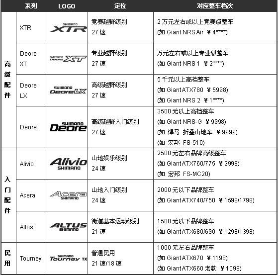
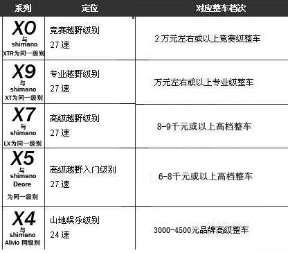

禧玛诺变速器等级的分类
原文：
- http://danche.xout.cn/dczs/74565.html
- http://blog.sina.com.cn/s/blog_53b6704f0101731r.html
- SHIMANO山地变速器和SRAM山地变速器
SHIMANO

-
SHIMANO的自行车部门主要生产自行车的变速，传动，剎车等配件，我们一般统称为套件，具体包括：
- 前拨链器（前拨）
- 后拨链器（后拨）
-
变速手柄
- 登山车有转把、指拨、双控手柄这几种形式
- 公路有手变（STI双控手柄和指拨）
- 前链轮（牙盘）
- 后链轮（飞轮）
- 链条
- 花鼓
- 剎车
- 以及相关的各种变速线&管，剎车线&管&油等等配件。
-
山地车套件:
- 大套件:前拨，后拨，变速手柄（转把，指拨，双控手柄），牙盘，飞轮，链条，花鼓，刹车，以及相关的各种变速线管，刹车线管油等配件。
- 小套件:就是只包括前拨，后拨和变速手柄。
SHIMANO各等级套件的名称
SHIMANO运动级别的登山车越野、公路车用套件名称、级别表：
| 类别 | 名称 | 级别 |
|---|---|---|
| 山地 | C0C5,SIS | 更低级别 |
| TOURNEY | 入门娱乐级 | |
| ALTUS | 娱乐级 | |
| Acera(M340) | 娱乐级 | |
| ALIVIO(M410) | 顶级娱乐级 | |
| Deore(M530,M535) | 专业入门级,分水岭，Deore（含）以上都可以称为专业级 | |
| Deore Slx/LX(M580,M585) | 专业训练级(SRAM X7)，Deore读音：得噢瑞、丢尔 | |
| HONE(M600) | 介于XT和LX之间，适用重型XC和AM | |
| Deore XT(M760,M765) | 顶级训练级(SRAM X9) | |
| SAINT(M800) | 介于XTR和XT之间，适用于AM和FR | |
| XTR(M970,M975) | 顶级竞赛级(XRAM XO) | |
| DXR,CAPREO | 适用于小轮车 | |
| 公路 | A050,SIS | 更低的用于民用 |
| 2200 | 入门娱乐级 | |
| SORA(3300) | 娱乐级 | |
| TIAGRA(4500) | 业余级别 | |
| 105(5600) | 专业入门级,分水岭，105（含）以上都可称之为专业级 | |
| Ultegra(6600) | 专业训练级 | |
| DURA-ACE(7800) | 顶级竞赛级 |
SHIMANO个等级套件的详细区别
以上级别分法是比较含糊的，所谓娱乐就是特指非代步的骑行运动，下面再来精细分级。
截至2007年2月，SHIMANO各等级套件的型号为：
登山车：TOURNEY；ALTUS；Acera(M340)；ALIVIO(M410)；Deore(M530 碟剎为M535)；Deore LX(M580 碟剎为M585)；Deore XT(M760 碟剎为M765)；XTR(M970 碟剎为M975)；另外还有HONE(M600；SAINT(M800)
公路车用套件：2200，SORA(3300)，TIAGRA(4500)，105(5600)，Ultegra(6600)，DURA-ACE(7800)
详细比较只讨论这些最新的型号，从每个零件的细节开始比较，看完了就会明白，各个等级到底差在哪里。
登山车： TOURNEY严格来说不算完整的一套套件，它的定位是入门运动 支持6/7速
山地车
ALIVIO
Acera和ALTUS没有显著的区别，价格也相差很小，可以简单的理解为同一层次，Acera主要配置8速，而Acera和ALTUS主要配置7速（其实他们都可以同时兼容7速和8速），相对TOURNEY来说，增加了8速的支持， Acera的后拨连接销其中有一个轴套上有氟涂层，阻力更小更耐磨些。
ALIVIO同为8速套件，现在的M410已经是很完整的套件，除了含有Acera的特性，相对Acera高级之处在于：
- 后拨使用了宽连接，有两个连接销采用了氟涂层
- 前拨使用了宽连接
- 变速手柄的形式从Acera和ALTUS的EZ FIRE PLUS变为了更高级的RAPIDFIRE PLUS
- 曲柄开始采用OCTALINK花键连接
- 这个等级的花鼓开始使用铝快拆
- 配套的HG50飞轮镀铬
Deore
Deore 从Deore开始，全部采用了MEGA 9系统，全为9速了，Deore除了含有ALIVIO的特性，相对ALIVIO的高级之处在于：
- 后拨导轮使用不锈钢螺钉，铬化钢轴承，接片枢轴有O型环密封，并且开始采用低位标准型设计
- 花鼓轴挡采用超级抛光，轴碗采用滚筒抛光，双层迷宫密封
- 9速HG飞轮 HG50-9采用镀镍钢材质
- M530和M535的手柄都采用了双控手柄
- 前拨连接钢镀锌，链罩为钢镀铬
- 曲柄采用中空HOLLOW TECH一代技术曲柄，OCTALINK八角花键连接，不锈钢螺丝
- 大齿片和中齿片为铝材质，小齿片为钢材质，曲柄臂为铝材质
- HG53链条使用灰色/棕色钢材质
Deore LX
Deore LX 除了含有Deore的特性，相对Deore的高级之处在于：
- 后拨材质更硬更薄些，相应的采用了静电着色
- 花鼓轴碗采用非滚筒抛光
- M580飞轮采用了珍珠白处理的钢材质
- HG73链条采用了灰色/灰色钢材质
- 曲柄采用了一体式中轴和HOLLOW TECH II中空二代技术，曲柄臂为锻造铝材质
Deore XT
Deore XT 除了含有Deore LX的特性，相对Deore LX高级之处在于：
- 后拨张力轮采用密封轴承，接片枢轴双O型环密封，导板枢轴也有O型环密封，4个连接销全部有氟涂层，内外导板全部采用铝材质。
- 曲柄臂采用高硬度锻造铝，大齿片采用7075铝材质切削，中齿片和小齿片都是高硬铝，螺钉全为铝材质
- 飞轮采用合金支架。
XTR
XTR除了含有Deore XT的特性，相对于XT的高级之处在于：
- XTR全新改款，M970多处大变动，详见随处可见的M970介绍，这里就不重复了。
- 后拨的导轮和张力轮全部采用密封轴承，各连接都采用超硬冷铸铝，阳极电镀着色
- 花鼓的档和碗全部采用超级抛光，并且使用不锈钢滚珠，花鼓壳使用高硬铝，M970/975新改进后花鼓密封，新型4棘爪间隙更小，轴心使用钛合金。
- 飞轮采用超硬合金支架，最大4片齿片为钛合金
- 7701链条采用镀锌合金材质
- 曲柄采用超硬冷铸铝，大齿片和小齿片是7075铝切削，中齿片为钛合金符合材料，螺丝全部超硬铝
公路车
公路车2200的定位是入门的娱乐级，有平把组件和弯把组件，支持8速，不能算是完整的一套套件。
SORA
SORA是娱乐级，同样是8速的，除了含有2200的特性之外，相对2200的高级之处在于：
- 后拨的多个钢部件加上了珍珠白涂层，更耐磨
- 前拨内链接镀锌，更耐腐蚀
- 曲柄经过了抛光，有OCTALINK八角花键版本
- 前后花鼓都使用了橡胶密封
TIAGRA
TIAGRA采用了9速变速，除了含有SORA的特性之外，相对SORA高级之处在于：
- 后拨采用了宽链接，支持9速，外链接链接销进行了密封处理，保持润滑，2个链接销的衬套含有氟涂层
- 前拨采用了宽链接，支持9速，内链接镀铬
- 手变使用新的人体工程学设计，支持9速，可视化文件位显示
- 夹器使用带涂层轴承垫圈
- 使用了集成中轴结构（不是中空二代）
- 前后花鼓采用迷宫式接触密封
- 配套的HG53链条支持9速，使用铬化处理链接销
105
从105开始，全部采用了10段变速，105除了含有TIAGRA的特性之外，相对TIAGRA的高级之处在于：
- 后拨接片枢轴采用了O型环密封，内外导板都使用了铝合金材质，更轻，更润
- 前拨链接全部采用铝合金材质，链条导板镀铬
- 手变支持10速
- 剎车块采用了套装式剎车块固定座，即剎皮橡胶部分固定于金属剎皮盒中，剎车皮更换更方便，而且剎车效果更好
- 牙盘中轴采用HOLLOW TECH II中空二代技术，铬钼合金钢中轴，铸铝曲柄，铝齿片
- 10速飞轮使用合金支架，镀镍钢材质
ULTEGRA
ULTEGRA除了含有105的特性之外，相对105的高级之处在于：
- 后拨张力轮采用了密封轴承，接片枢轴双O型环密封，板体枢轴O型环密封，内外链接销全部密封轴承，4个轴承全部氟涂层
- 前拨链接使用单套管密封轴承
- 架器采用冷铸铝，有轴承垫圈和插入式轴承
- 中轴采用铝合金材质，齿片采用超硬铝材质切削
- 飞轮更精细加工
- 链条使用镀锌合金
DURA-ACE
DURA-ACE除了含有ULTEGRA的特性，相对 ULTEGRA的高级之处在于：
- 后拨张力轮和导轮都使用密封轴承，内外链接都使用超硬冷铸铝，所有链接销全部密封+氟涂层，所有枢轴双O型环密封
- 前拨内外链接全部使用超硬冷铸铝，内外导板都采用镀镍铝材质
- 双控手柄使用工程复合物接片，阳极电镀手柄
- 架器采用超硬冷铸铝，所有转点使用带涂层和插入式轴承
- 曲柄使用加强型大型支架，阳极电镀超硬冷铸铝曲柄臂，阳极电镀超硬铝切削加厚齿片，超硬铬钼钢中轴
- 花鼓使用不锈钢滚珠
- 飞轮片最大的4齿使用钛合金镀镍材质
- 链条内外板全部镀锌，链条销铬化处理
SRAM

sram是转把式的开山鼻祖，它的变比是1:1，由于后拨拉线比是1:1，所以链条张紧力度比SHIMANO要大，对线管的要求也比较低，能够容忍较大的线管磨损。优点是：变速速度快，耐用性要好！
-
sram与shimano的视频对比
- sram x.0-shimano xtr
- sram x.9-shimano deore xt
- sram x.7-shimano lx
- sram x.5-shimano deore
-
SRAM（速联）公司是美国的公司，旗下有：
- SRAM变速器系列；
- ROCK SHOX前叉系列；
- AVID碟刹系列等。
都是一些在自行车界如雷贯耳的牌子。
SRAM公司是转把的开山祖，以转把生产居长。SHIMANO是指拨的创始公司，把指拨做得是登峰造极。两者各有所长。
速联的确有一款叫ATTACK的指拨，但是明显有SHIMANO的影子在里面。
07年前的sram变速器等级分: X0 X9 X7 SX5 SX4
其中SX4为8速后拨。
- 与shimano的等级对应关系：
| SHIMANO | SRAM | 消费对象 |
|---|---|---|
| XTR | X0 | 竞赛 |
| XT | X9 | 训练 |
| LX | X7 | 顶级休闲 |
| DEORE | SX5 | 山地入门 |
| ALIVIO | SX4 | 娱乐 |
| ACERA 和ALUTS | 休闲 | |
| TOURNEY | 大众 |
08年后，SX系列也改为X系列，后拨增加X3型号。
sram和shimano的走线设计也不一样。
玩车的几乎无人不知SHIMANO，SRAM在中国名声比SHIMANO略低。SRAM产于美国，主要产品是变速系统,传动系统,避震（ROCKSHOK），制动系统（AVID）。近两年先后收购了rockshox、avid、truvativ。
SHIMANO占领中国市场很多年，而SRAM在性价比上稍优越一些，比如SRAM-7.0变速系统就是针对Shimano-XT设计的，但是价格便宜不少。
SHIMANO的变速器级别，从高到低依次是XTR， XT， LX， Deroe， Alivio，Acera，Altus，Tourney。
SRAM的变速器级别，从高到低依次是XO、X9、X7, X5, X4。
SHIMANO跟SRAM有的零件不兼容，最好不要混用。
指拨对比
关于指拨和转把的区别，下面会谈到。
SRAM的拉线比是1:1，也就是说在指拨处变速线移动1毫米，在后拨处（可参见链条上导轮）就移位同样的距离。
SHIMANO的拉线比是1:2.5，即指拨移动1毫米后拨移动2.5毫米。这就是SRAM与SHIMANO之间最大的差异。
由于1:1的比例，因此SRAM可以容忍的拉线误差要大于SHIMANO。可产生误差主要由线管内径变粗、使用螺旋铁皮外管线或变速线本身具有伸缩性引起。如果要使用SHIMANO，我们就要使用高级变速专用管、线，并在内径被磨粗后及时更换管线。
另外还有一个差异之处在于后拨，SRAM的后拨弹簧要比SHIMANO力道大。有人会说，这样不是变速时会比SHIMANO来得吃力。但如果考虑到手拨的1:1情况就不是这样了。
要实现1:1后拨肯定要使用差不多相同的杠杆距离，而SHIMANO则要比拉线处长才能实现2.5倍的变距。所以指拨的力度感应该相差不大。但弹簧力道大在越野时会表现更佳，不会因为振动而移位。还可以拉直管线，有一定的减小变速误差的作用。SRAM使用大量的金属材质应该比SHIMANO更耐用。
说了这么多，肯定有人认为，那SRAM的1:1就一定比SHIMANO的好，为什么SHIMANO不设计成1:1。
所谓尺有所长寸有所短，1:2.5也不是全无优势。
首先可以用更小的变速齿轮SHIMANO就会在重量和体积上占有优势，尤其是在一些空间受限制的情况，比如：XTR的指拨或公路的手变头。另外，SHIMANO的模具要比SRAM来得精良，且塑料也更容易加工。
Deore/SLX/XT技术对比
| 技术特性 | Deore M610 | SLX M670 | XT M780 |
|---|---|---|---|
| 双向释放 | √ | √ | √ |
| 瞬间释放 | √ | ||
| 多点释放 | √ | ||
| 3X-2X切换 | √ | √ | √ |
| 影子技术 | √ | √ | √ |
| 轴承导轮 | √ | ||
| 分体铝飞轮支架 | √ | √ | |
| 方向性链条 | √ | √ | √ |
| 超顺滑链条涂层 | √ | √ | |
| 中空II代曲柄 | √ | √ | |
| 复合材质中盘 | √ | √ | √ |
| 7075铝超硬大盘 | √ | √ | |
| 日本原产 | √ | √ | |
| 重量 | 2418g | 2238g | 2150g |
| 价格 | 980元 | 1190元 | 1860元 |